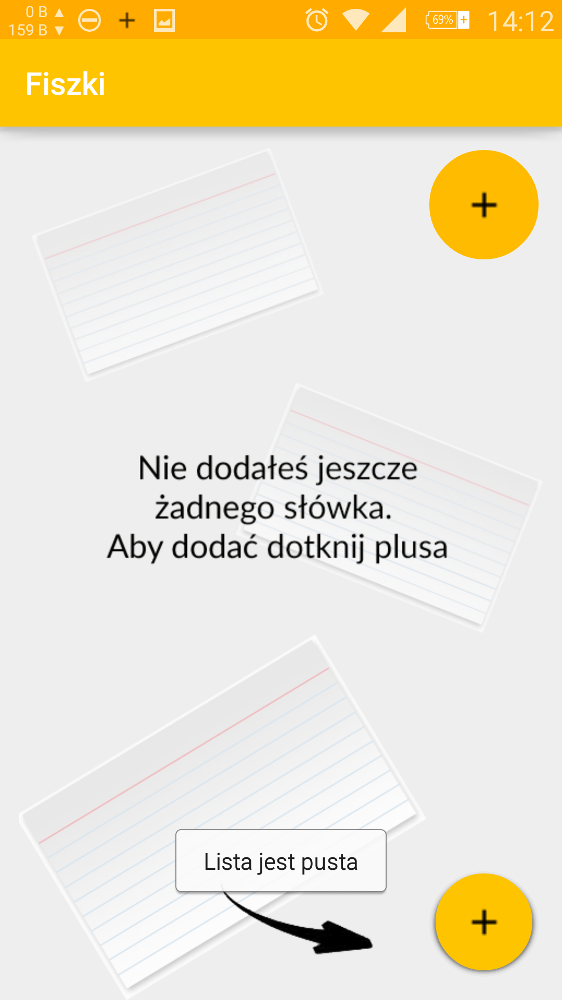

Ucz się słówek szybciej niż kiedyolwiek!
Aplikacja fiszki powzstałą z myślą o każdej osobie,
która chce w krótkim okresie czasu nauczyć się słów w języku obcym.
Dzięki aplikacji Fiszki nie trzeba spędzać ani 5 minut na nukę,
ponieważ uczysz sie przez chwilę co 15 minut.
Daje to świetne rezultaty i nie zajmuje czasu!
Wsyzstko co musisz zrobić, to wpisać słowa, których chcesz się nauczyć